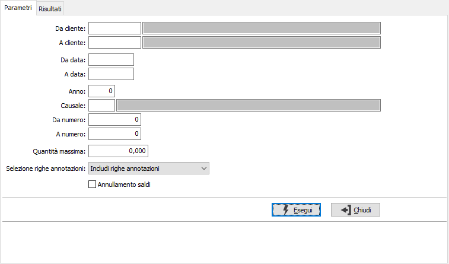
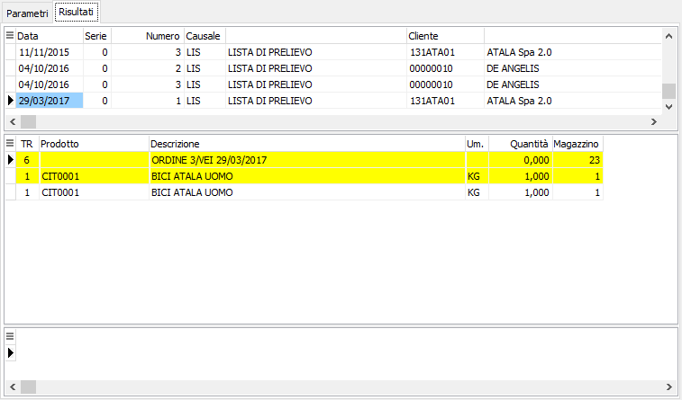

Saldo liste di prelievo
La funzione consente di eliminare logicamente le liste inutilizzabili in modo da escluderle dalla generazione documenti di spedizione; è possibile anche effettuare l'annullamento del saldo spuntando l'apposita casella "Annullamento saldi"; l'annullamento sarà possibile solo per le liste di prelievo che sono state precedentemente saldate con questa procedura.
Nei parametri è possibile selezionare le liste di prelievo per cliente, data, anno, causale, numero e quantità; è possibile anche includere, escludere o selezionare solo le righe di annotazioni utilizzando l'apposito parametro.

La pagina dei Risultati riporta nella griglia superiore l'elenco dei documenti e nella griglia inferiore le righe relative alla lista su cui si è posizionati.

Da questa pagina è possibile effettuare il saldo delle singole righe, o l'annullamento dello stesso se si è effettuata l'elaborazione per l'annullamento, con il doppio clic del mouse oppure tramite il menù contestuale accessibili tramite il tasto destro del mouse sulla griglia delle righe. Il doppio clic sulla griglia superiore accede direttamente al documento.
Per rendere effettivo la registrazione, è necessario confermare premendo il bottone Salva o il tasto funzione F10.